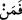

Ülkeyi zâlim birinin eline verir
“Allah onlara şöyle demişti:” yani sâdece İsrâiloğulları’na demişti. Çünkü teşvîke
ve sakındırmaya en muhtaç kişiler onlardı. “Ben” ilmim, kudretim ve yardımım ile
“sizinle berâberim” sözlerinizi duyar, yaptıklarınızı görür ve içinizde olanı bilip ona
göre cezâlandırırım. Kelam burada bitiyor. Daha sonra Allah yine İsrâiloğulları’na
hitâben şu şart cümlesiyle başlıyor:
“Eğer namazı dosdoğru kılar, zekâtı verir,” tüm “peygamberlerime” inanır, onları
destekler” yani onlara yardım ederseniz. “ve Allah’a” hayır yolunda harcayarak veya
mendub sadakalarla “güzel borç verirseniz andolsun ki sizin günahlarınızı örterim ve
sizi zemîninden ırmaklar akan cennetlere sokarım.” Yani ağaçlarının ve evlerinin
arasından dört tane nehir akan cennetlere girdiririm.
Ayette bahsedilen borç verme ile zekât arasındaki fark açıktır. Çünkü zekât farzdır.
Borcun güzel olması; infâkın malın en iyisi ve değerlisinden arzu ve ihlasla
verilmesine, içerisine riyâ ve şöhret karıştırılmamasına, başa kakma ve eziyet verme ile
bulandırılmamış olmasına bağlıdır.
“Bundan sonra sizden kim” rasullerimi ve şart koşulan şeylerden birini “inkar
ederse” “
” lafzının başına “fe” harfinin getirilmesinden maksat, teşvik ve
sakındırmada daha etkili olması için inkar edenin hükmünün îman edenin hükmünden
sonra geldiğini beyân etmektedir. “doğru yoldan sapmış olur.” Yani apaçık orta yoldan
açık bir şekilde sapmış ve daha önceden inkar etmiş olanın aksine aslâ mâzeret
sunamayacağı bir şekilde çok büyük bir hata işlemiş olur. Çünkü önceden kâfir olanın
şüphe etmesi ve mâzeretinin olabileceğinin vehmedilmesi belki de mümkündür.
Rivâyet edildiğine göre İsrâiloğulları Fir’avn’ın ölümünden sonra Mısır’a
yerleştikleri zaman Allah onlardan Şam topraklarında bulunan Eriha’ya gitmelerini
emretti. Eriha, her köyünde bin bahçenin bulunduğu bin köyden meydana gelen ve
sâkinleri zorba Kenânîler olan mukaddes bir yerdi.
Allah onlara “Ben sizin bu yurda yerleşmenizi hükmettim. Oraya gidip oradakilerle
savaşın. Ben sizin yardımcınızım.” buyurdu. Mûsâ (a.s.)’a da her kabileden onların
işlerini güvence altına almak ve verilen emirleri tam olarak yapmalarına kefil olmak
üzere güvenilir birer başkan seçmesini emretti.
Mûsâ (a.s.) da başkanları seçti. İsrâiloğulları’ndan söz aldı. Başkanları da onlara
kefil oldu. Hz. Mûsâ (a.s.) İsrâiloğullarıyla birlikte yola koyuldu. Kenan’a
yaklaştıklarında başkanları haber toplamak ve durumlarını öğrenmek üzere oraya
gönderdi. Onlar orada iri cüsseli adamlar, güç ve kuvvet gördüler, korktular ve dönüp
gördüklerini kavimlerine anlattılar. Mûsâ (a.s.) bunu kavimlerine anlatmamalarını
istedi. Fakat onlardan Yehûda kolunun başkanı Kâleb b. Yûkanna ile Efrâîm b. Yûsuf
es-Sıddîk (a.s.)’ın kolunun başkanı Yûşa b. Nûn dışındaki başkanlar sözlerinde
durmadılar.
Bil ki Allah Teâlâ Mûsâ (a.s.)’ın ümmetinde zarûret anında kendilerine mürâcaat